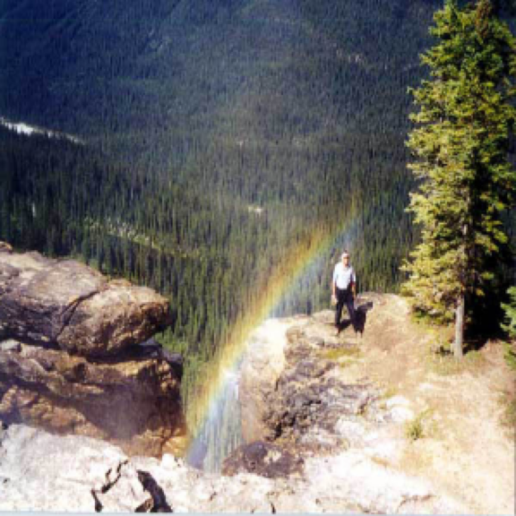
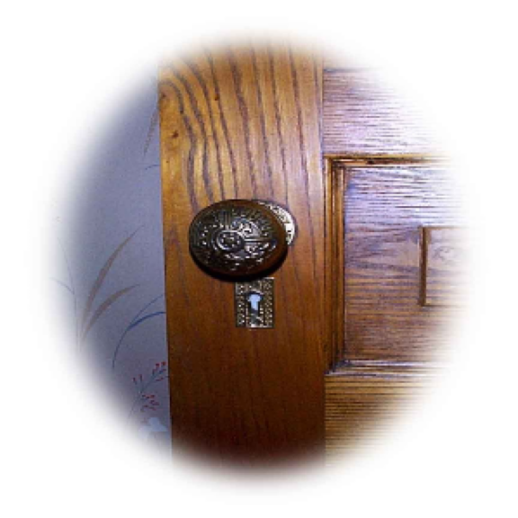
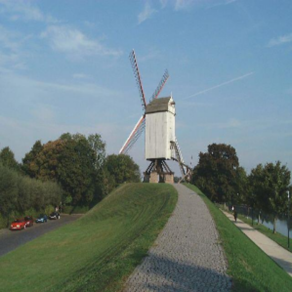
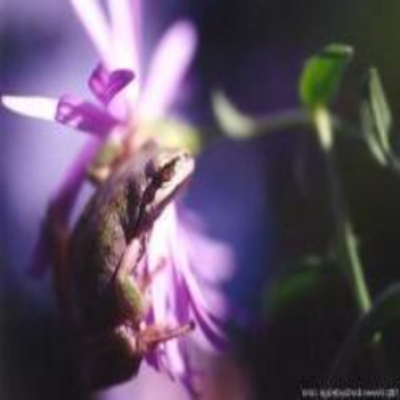
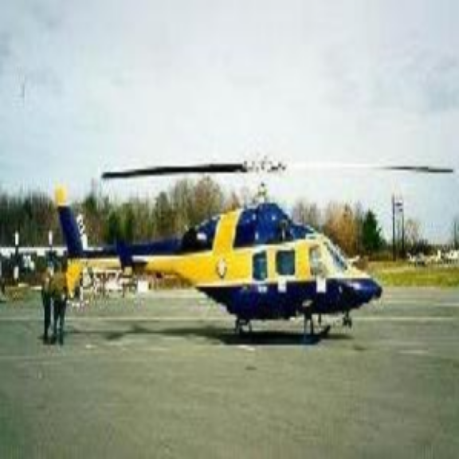
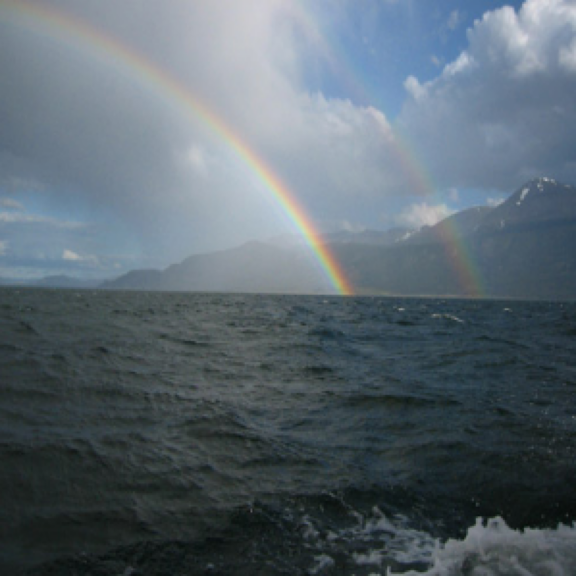
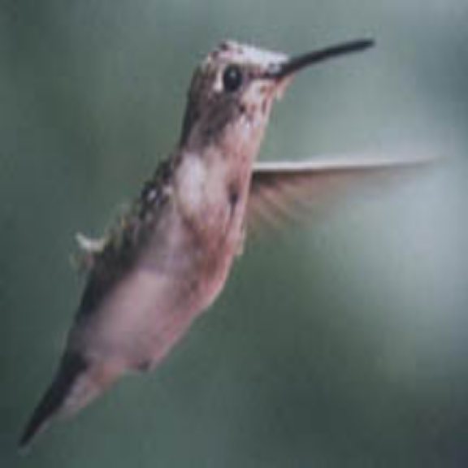
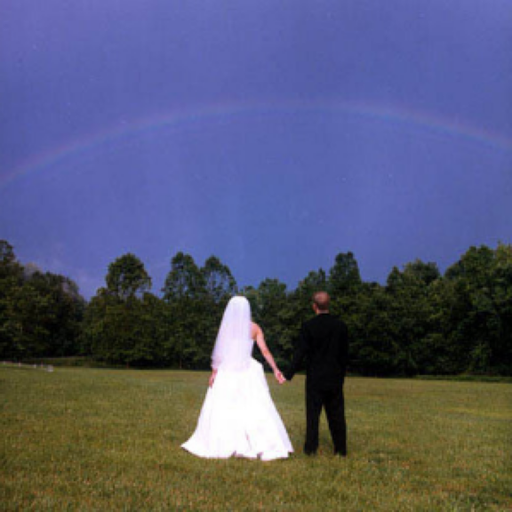
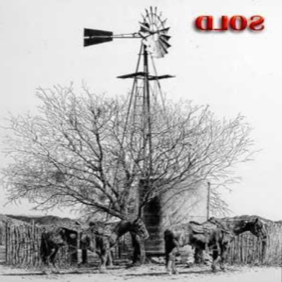

cluster 0 · idx 46

稀に、水滴内で2回反射して生じる副虹が見られることがあり、主虹の外側に現れ、色の並びが逆（外側が紫、内側が赤）になります。 虹は観測者から見て、太陽とは反対側の空に、特定の角度（主虹で約42度）にある水滴からの光が集まって見えるため、円弧状に見えます。 実際には完全な円形ですが、地平線より下の部分は見えないことが多いです。 飛行機など高い場所から見ると、円全体が見えることもあります。
cluster 1 · idx 73
繁殖期は通常年に1〜2回で、妊娠期間は約60日前後である。 人間との深い関わりは、イヌが単なる動物としてだけでなく、文化や芸術、そして人々の生活に不可欠な存在として認識される理由となっている。
cluster 2 · idx 1

素材は、真鍮、ステンレス、アルミなどの金属のほか、木材、プラスチック、陶器、ガラスなど多岐にわたり、耐久性、デザイン性、触感、衛生面、防犯性などが考慮されて選ばれる。 ドアノブの内部には、操作部と連動するスピンドルと呼ばれる軸が組み込まれており、ノブを回したりレバーを押し下げたりする動作によってこのスピンドルが回転または移動し、扉の側面に突出しているラッチボルトを引っ込める。 これにより、扉が枠に固定された状態から解放され、開くことができる。
cluster 3 · idx 28

風力発電の仕組みは、風によって回転する羽根の運動が、増速機を介して発電機を回し、電気を生み出すというものである。 自然の力を利用するため、運用時に温室効果ガスを排出しないという利点がある一方で、設置場所の選定、景観への影響、騒音、鳥類への影響といった課題も議論されることがある。
cluster 4 · idx 75
人間社会におけるその存在は、単なる家畜に留まらず、精神的な支えや生活の豊かさをもたらすかけがえのないパートナーとして認識されています。
cluster 5 · idx 76

カエルとは、両生綱無尾目に属する動物の総称であり、一般に尾を持たない成体と、水中で生活する幼生（オタマジャクシ）が変態を経て成長する特徴を持つ脊椎動物です。 その体は一般的に湿潤な皮膚に覆われ、粘液腺が発達しているため常に湿り気を帯びており、この皮膚は呼吸器官としても重要な役割を果たします。 多くの種では、跳躍に適した発達した後肢と、獲物を捕らえるための大きな口、そして突出した目を持ち、周囲の環境に溶け込む保護色を持つものも少なくありません。 幼生期は水中で鰓呼吸を行い、主に植物質などを食べますが、変態して成体になると肺と皮膚による呼吸を併用し、主に昆虫やクモ、ミミズなどを粘着性のある舌で捕食する肉食性となります。 カエルは世界中の様々な環境、特に水辺や湿潤な場所に広く生息しており、その多様性は非常に豊かです。 繁殖期には水中に卵を産み付け、孵化した幼生は水中生活を送った後、四肢が生え、尾が吸収されるといった劇的な変態を経て成体となります。 多くの種が独特の鳴き声を発し、これは主に求愛や縄張りの主張に用いられます。
cluster 6 · idx 10

ヘリコプターとは、機体上部に備えられた一つまたは複数の大きな回転翼（メインローター）の回転によって揚力を得て飛行する航空機の一種です。 固定翼機が滑走して離陸するのに対し、ヘリコプターは滑走路を必要とせず垂直に離陸・着陸できるほか、空中の一点に静止するホバリング、後退、横移動といった独特の飛行能力を持ちます。
cluster 7 · idx 47

虹とは、大気中の水滴によって太陽光が屈折・反射・分散されることで現れる、光のスペクトルが連続的に並んだ円弧状の現象である。 この自然現象は、太陽を背にして、雨上がりや霧の中、あるいは滝のしぶきなど、空気中に多数の水滴が存在する状況で観察される。 太陽光が水滴に入射すると、光の波長によって屈折率が異なるため、白色光が赤から紫までの様々な色に分離される（光の分散）。 分離された光は水滴の内部で反射し、再び水滴から出る際に屈折することで、色の帯として私たちの目に届く。
cluster 8 · idx 34

繁殖期には、オスが縄張りを持ち、急降下飛行などの独特な求愛ディスプレイでメスを惹きつけます。 メスは植物の繊維やクモの糸、地衣類などを用いて小さなカップ状の巣を作り、非常に小さな卵を産み育てます。 彼らは花の蜜を吸う際に花粉を運び、植物の受粉を助ける重要な役割を担っており、その美しい姿と驚異的な生態から、自然界の象徴的な存在として広く認識されています。
cluster 9 · idx 43

一般的に見られるのは主虹（一次の虹）で、水滴内で光が1回反射することで生じ、外側が赤色、内側が紫色となる。 主虹は最も明るく鮮明に観察される。 まれに、主虹の外側に副虹（二次の虹）が見られることがある。 副虹は水滴内で光が2回反射することで生じ、色の並びが主虹とは逆で、外側が紫色、内側が赤色となり、主虹よりも淡い色合いであることが多い。 虹は実際には完全な円形であるが、通常は地平線や観察者の位置によってその一部が弧として見える。 飛行機など高い場所からは円全体が観察されることもある。
cluster 10 · idx 24

この用途では、環境負荷の低い再生可能エネルギー源の一つとして、地球温暖化対策やエネルギー自給率向上に貢献するため、大型化や洋上設置など、技術開発が進められている。 また、大規模な発電施設だけでなく、風向風速計、装飾品、子供のおもちゃ、あるいは特定の場所を示すランドマークなど、身近なところでも風の力を利用する様々な装置や道具に「風車」の名称が用いられている。